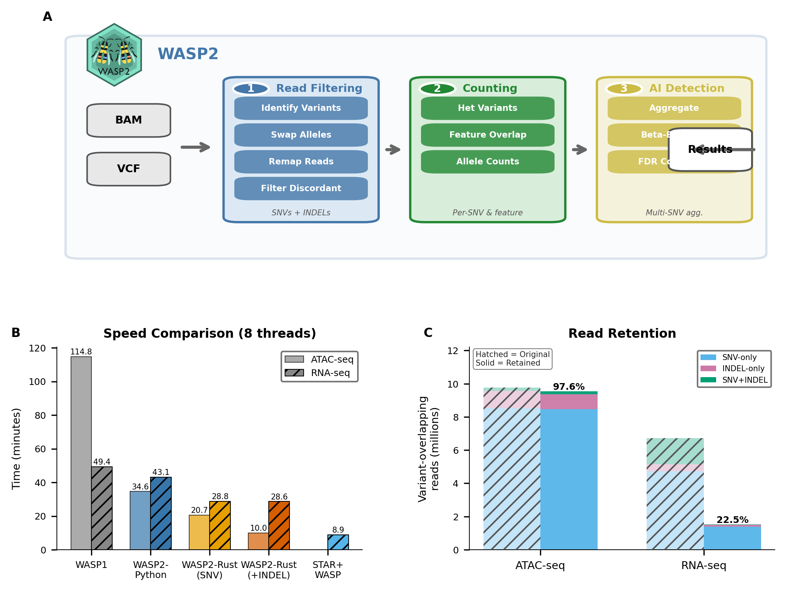
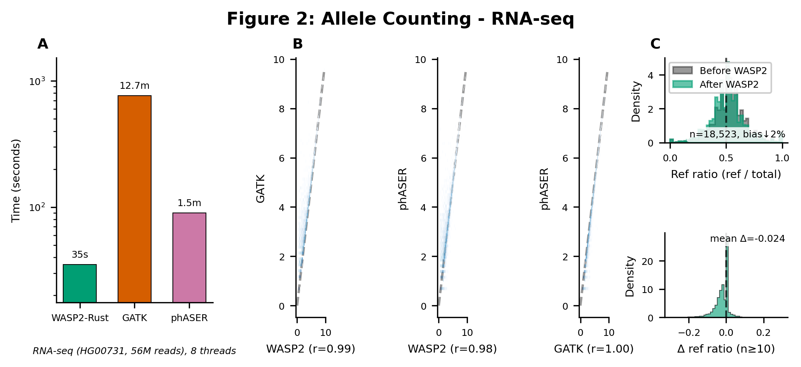
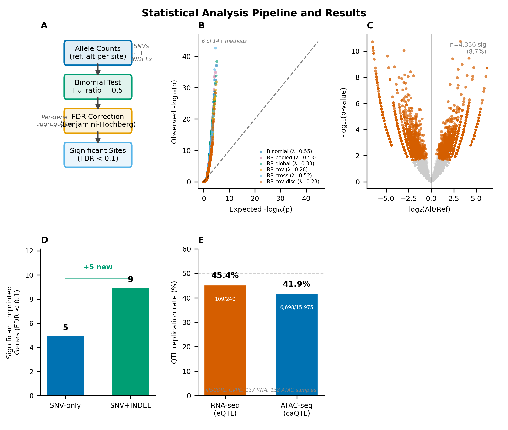
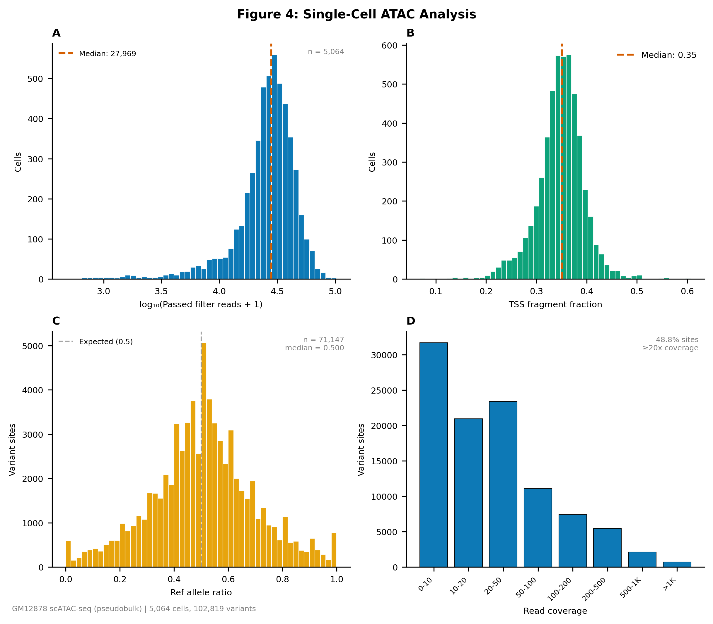

WASP2 Paper Figures — Nature Methods Submission
Figure 1: Read Mapping Pipeline
✓ PASS

Pipeline overview, speed benchmarks (8 threads), read retention
✓ 177.8mm width
✓ 300 DPI
✓ Colorblind-safe
Figure 2: Allele Counting Benchmarks
✓ PASS

GATK/phASER comparison, correlation, bias reduction
✓ 180mm width
✓ 300 DPI
✓ 8pt labels
Figure 3: Statistical Analysis
✓ PASS

Methods schematic, QQ plots (6 of 14+ methods, λ per method), volcano, imprinting (+5 genes), QTL replication (RNA 45.4%, ATAC 41.9%)
✓ 180mm width
✓ 300 DPI
✓ λ per method
✓ 137 RNA + 137 ATAC samples
Figure 4: Single-Cell ATAC Analysis
✓ PASS

Cell QC, TSS enrichment, allelic ratio (median=0.500), coverage
✓ 177.8mm width
✓ 300 DPI
✓ Median reported